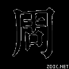

周
维基百科 | 汉典释义
维基百科
来源
- 周姓的初源，有很多记载历史，最早可追溯到周立朝874年，秦灭周后，把汝坟划划汝南郡。食釆郡于汝坟的周平王后代，亡国后人称为“周家”，也改了周姓。周于是成为了汝南的大姓。另外，在唐玄宗李隆基在位时，为避讳“基”读，于是姬姓人士大多改姓周，这是周姓的一大来源。
- 由苏姓改姓而来。谱载，元朝末年，有位名为苏卓周的人改姓周，以苏姓武功为郡望，人称武功周氏。
- 出自少数民族改姓。《魏书官氏志》载，北魏献帝次兄拓跋普，鲜卑拓跋氏，在北魏孝文帝时改姓周。
周氏古墓
- 周绍基墓(晋江周姓始祖)元
- 地址：金井镇围头村中
历史名人
- 周勃（前169年卒）
- 周亚夫（前143年卒）
- 周瑜（175年—210年）
- 周处（236年—297年）
- 周敦颐（1017年－1073年）
- 周邦彦（1056年－1121年）
- 周亮工（1612-1672年)
- 周士涟（1756年－1834年）
- 周树人（鲁迅，1881年—1936年）-近代著名作家，革命家
- 周作人（1884年—1967年）
- 周信芳（1895年—1975年）
- 周佛海（1897年—1948年）
- 周恩来（1898年—1976年）-中国近代革命家、军事家、政治家，中国共产党主要领导人之一、中华人民共和国首任总理。
- 周炜良（1911年—1995年）
现代名人
- 周南：前任新华社香港分社社长
- 周礼茂：香港填词人，现职新城
- 周永康：前中共中央政治局常委、中央政法委书记
- 周小川：中国人民银行行长
- 周小燕：著名女高音歌唱家，声乐教育家
- 周正毅：上海商人、上海首富
- 周迅： 中国大陆知名女演员、歌手
- 周慧珺：中国书法家
- 周耀南：香港名驹爪皇凌雨已故马主
- 周洁仪：香港无线新闻编辑
- 周嘉仪：香港无线新闻主播/附属新闻台首席主播
- 周诗泓：前香港无线新闻记者
- 周一岳：香港前食物及卫生局局长
- 周亦卿：香港企业家
- 周松岗：香港铁路有限公司前行政总裁
- 周文耀：香港联合交易所前行政总裁
- 周启邦：香港律师
- 周洁冰：前香港市政局议员，现港岛区议员，1990当选为香港十大杰出青年
- 周嘉玲：前香港电视及电影演员，现职商界
- 周启生：香港唱作人
- 周润发：香港影星
- 周俊威：新加坡, 马来西亚音乐制作人， 音乐教授。
- 周星驰：香港影星
- 周奕希：香港葵青区议员
- 周婉侣：首代多啦美配音演员，现多元文化电视台助理传讯总监。
- 周家蔚：香港无线电视艺员
- 周华健：台湾歌手
- 周游 ： 台湾知名电视制作人
- 周传雄：台湾歌手
- 周杰伦：台湾著名华语流行音乐男歌手。
- 周渝民：台湾歌手、演员、F4
- 周海媚：香港艺人
- 周慧敏：香港歌手
- 周汶锜：香港模特及歌手
- 周丽淇：香港模特及歌手
- 周柏豪：香港模特及歌手
- 周秀娜：香港模特
- 周笔畅：中国大陆歌手
- 周宜霈：旧名周怡君和周云溱，艺名大牙，台湾主持及演员，前黑Girl团长
- 周思齐：台湾中华职棒球员
- 周中： 香港资深名厨
- 周光召：中国科学院院长
- 周定纬：台湾著名男艺人。
罗马字译写
常见的有Zhou（汉语拼音）、Chou（威妥玛拼音、香港政府粤语拼音）、Chow（邮政式拼音）、Chao及Chau；通用拼音的Jhou与国语罗马字的Jou则较为罕见。
注释
汉典释义
基本解释
基本字义
● 周
zhōu ㄓㄡˉ
1. 圈子，环绕：～围。～天。～转（zhuǎn ）。～匝（a.环绕；b.周到）。
2. 普遍、全面：～身。～延。～全。～游。
3. 时期的一轮，亦特指一个星期：～岁。～年。～期。～星（十二年）。上～。
4. 完备：～到。～密。～详。～正（端正）。～折（事情进行不顺利）。
5. 给，接济：～济。
6. 中国朝代名：西～。东～。北～。后～。
7. 姓。
汉英互译
◎ 周
week Chou all all over circumference thoughtful
宋本廣韻
廣韻目次：下平十八尤
小韻
反切
聲母
韻母
聲調
平水韻
等呼
韻部
韻攝
罗马字
国际音标
周
職流
章
尤
平聲
尤
開口三等
尤
流
cju／tjou
tɕĭəu
方言集汇
◎ 粤语：zau1
◎ 客家话：[东莞腔] ziu1 [梅县腔] zhu1 zhiu1 [客语拼音字汇] zu1 [客英字典] zhiu1 [台湾四县腔] zu1 ziu1 [海陆丰腔] zhiu1 [宝安腔] zu1 (ziu1) [沙头角腔] zu1 [陆丰腔] zhiu1
详细字义
◎ 周 zhōu
〈形〉
(1) (象形。甲骨文字形,在“田”里加四点,郭沫若认为“周象田中有种植之形。”有稠密和周遍的意思。小篆析为会意,从用口。段玉裁认为,善用口则周密。本义:周密;周到而没有疏漏)
(2) 同本义 [careful;meticulous;well-considered]
周,密也。——《说文》
忠信为周。——《国语·鲁语》
自周有终。——《礼记·缁衣》。注:“忠信曰周。”
人不可不周。——《管子·人主》。注:“谓谨密也。”
其藏之也周。——《左传·昭公四年》
辅周则国必强。——《孙子·谋政》
责己也重以周。——唐· 韩愈《原毁》
(3) 又如:周悉(周密);计划不周;周谋(周密的谋划);周严(周密严谨);周谨(周密谨慎);周虑(周密考虑)
(4) 稠密;紧密 [close]
橐之而约则周也。——《周礼·考工记·函人》
具车徒以受地必周。——《左传·襄公二十六年》。注:“密也。”
盟所以周信也。——《左传·襄公十二年》。注:“固也。”
(5) 又如:周置(密布);周云(密云,浓云);周闭(严密隐蔽内情)
(6) 亲密,亲切,熟悉而情深 [intimate]
周泽未渥也,而语极知。——《韩非子·说难》
虽有周亲,不如仁人。——《论语·尧曰》
(7) 又如:周笃(亲密深厚);周厚(亲密深厚);周亲(至亲);周党(至亲好友)
(8) 周到,处处留意和体贴;周全;全面 [thoughtful;considerate;perfect]
古之君子,其责己也重以周,其待人也轻以约。——韩愈《原毁》
(9) 又如:周致(周到严格);周细(周详);周悉(周到详尽);周委(周详委曲)
(10) 完备 [complete]
古之君子,其责己也重以周。——韩愈《原毁》
(11) 又如:周置(周全;办理);周庇(周全;庇护);周足(完备;充足);周普(完备;普遍);周方(周全方便)
(12) 遍及;普遍 [all;whole]
布履星罗,四周于天下。——柳宗元《封建论》
周身之帛缕。——唐· 杜牧《阿房宫赋》
(13) 又如:周身温暖;周谒(遍访);周览(遍览;巡视);周顾(环视);周观(纵观;遍览)
(14) 诚,忠信 [honest]
公不周乎伐郑也。——《谷梁传·成公十七年》
词性变化
◎ 周 zhōu
〈名〉
(1) 周围 [circumference;circle;ring;periphery]
大城不可以不完,郭周不可以外通。——《管子·八观》
(2) 又如:周驰(京城周围专供帝王车马行驶的道路);周回(周围);周合(四周合拢);周城(古代天子之城。周围城垣回绕不缺,与“斩城”对称)
(3) 拐角儿 [corner]
有杕(dì:挺立貌)之杜,生于道周。——《诗·唐风·有杕之林》
(4) 星期 [week]。如:周末;上周
(5) 朝代名 [Zhou Dynasty]
(6) 公元前11世纪周武王灭商后建立,建都镐京(今陕西西安市南)。历史上称平王东迁以前为西周,以后为东周。公元前256年为秦所灭,共历三十四王,八百多年
周景王之无射( yì)。(《国语》记载, 周景王二十四年即公元前521年铸成“无射”钟。)—— 宋· 苏轼《石钟山记》
(7) 南北朝时,宇文觉代西魏称帝,国号周。史称北周。为隋所灭
(8) 唐时,武则天临朝执政,改国号为周
(9) 五代时,郭威继后汉称帝,国号周。史称后周。960年为宋所灭
(10) 姓
◎ 周 zhōu
〈动〉
(1) 绕一圈,环绕 [make a circuit]
逐之,三周华不注。(山名。)——《左传·成公二年》
垣墙周庭。——明· 归有光《项脊轩志》
(2) 又如:周而复始(循环往复);周屈(环绕盘曲);周沓(回环错杂);周圆(循环);周转(运转,运行);周复(循环;反复)
(3) 保全 [preserve]
小智非周身之务。——《萤火赋》
(4) 又如:周方(帮助;关照;周全)
(5) 通“週”。周济;救济 [give financial help to]
靡人不周。——《诗·大雅·云汉》
君子周急不继富。——《论语·雍也》
周天下。——《礼记·月令》
周贫济老,咱们先倒挫磨起老奴才来了?——《红楼梦》
(6) 又如:周才(济世之才);周亟(救济急难);周急(周济困急);周务(济事,成事);周养(周济供养)
(7) 合,适合 [suit;befit;meet;fit]
宫室器械周于资用。——《韩非子·难二》
(8) 又如:周容(敬合取容);周和(谐合)
(9) 巩固 [solidate]
盟,所以周信也。——《左传·哀公十二年》
(10) 又如:周固(牢不可破)
(11) 保密 [keep secret]
周而成,泄而败。——《荀子·解蔽》
(12) 通“调”( tiáo)调和,协调[mediate;concert]
虽不周于今之人兮。——《楚辞·离骚》
贵其周于数。——《淮南子·原道》。注:“周,调也。”
立手四时之周。——《韩诗外传》
◎ 周
週 zhōu
〈动〉
(1) 回 [make a circuit;round]
週,回也。——《玉篇》
(2) “週”同“周”
週,俗周字。——《正字通》
常用词组
周报 周北门 周边 周遍 周长 周到 周而复始 周会 周济 周接 周界 周龄 周密 周末 周礼 周纳 周年 周期 周全 周任 周室 周身 周岁 周天 周围 周详 周星 周旋 周游 周瑜 周瑜打黄盖 周缘 周匝 周遭 周章 周折 周正 周知 周至 周转 周晬
康熙字典
〔古文〕

 《唐韻》職流切《集韻》《韻會》之由切，
《唐韻》職流切《集韻》《韻會》之由切， 音州。《廣韻》徧也。《易·繫辭》知周乎萬物。
音州。《廣韻》徧也。《易·繫辭》知周乎萬物。又至也。《書·泰誓》雖有周親，不如仁人。《傳》周，至也。
又忠信也。《書·太甲》自周有終。《傳》用忠信有終也。《詩·小雅》行歸于周。《論語》君子周而不比。《註》忠信爲周，阿黨爲比。
又終也。《左傳·昭二十年》以周事子。《註》周，猶終竟也。
又《說文》密也。《管子·樞言篇》先王貴當貴周，周者不出于口，不見于色，一龍一蛇，一日五化，之謂周。《註》深密不測，故周也。
又曲也。《詩·唐風》生于道周。《傳》周，曲也。
又《詩·周南疏》周，代名，其地在岐山之陽，漢屬扶風美陽縣。
又《廣韻》備也。《前漢·路溫舒傳》鍛錬而周內之。《註》晉灼曰：精熟周悉，致之法中也。
又《廣韻》周帀也。《前漢·劉向傳》周回五里有餘。《韻會》俗作週，非。
又鳥名。《爾雅·釋鳥》巂周。《疏》今謂之子規。
又《韓非子·說林篇》鳥有周周者，重首而屈尾，將欲飮于河則必顚，乃銜其羽而飮之。一作翢。
又不周，山名，在崑崙。《屈原·離騷》路不周以左轉兮。
又風名。《白虎通》西北曰不周風。不周者，不交也，言隂氣未合化也。
又陽周，平周，定周，皆縣名。《前漢·地理志》上郡陽周縣，西河郡平周縣，鬰林郡定周縣。
又姓。《廣韻》本自周平王子，別封汝川，人謂之周家，因氏焉。
又魏獻帝次兄普氏，後攺爲周氏。
又複姓，魏初徴士燉煌周生烈。
又與賙通。《論語》君子周急不繼富。《孟子》君之於氓也，固周之。
又叶市朱切，音殊。《季歷哀慕歌》梧桐萋萋，生于道周。宮榭徘徊，臺閣旣除。
清代陳昌治刻本『說文解字』

密也。从用口。 ，古文周字从古文及。職畱切〖注〗
，古文周字从古文及。職畱切〖注〗 ，亦古文周。
，亦古文周。
，古文周字从古文及。職畱切〖注〗，亦古文周。清代段玉裁『說文解字注』
密也。密，山部曰山如堂者。引伸訓爲周緻也。左傳。晏子曰。淸濁小大。短長疾徐。哀樂剛柔。遟速高下。出入周疏。以相濟也。以周與疏反對。又襄二十七年。春。胥梁帶使諸喪邑者。具車徒以受地。必周。杜皆云。周，密也。按忠信爲周。謂忠信之人無不周密者。从用口。善用其口則密。不密者皆由於口。職畱切。三部。
（完）